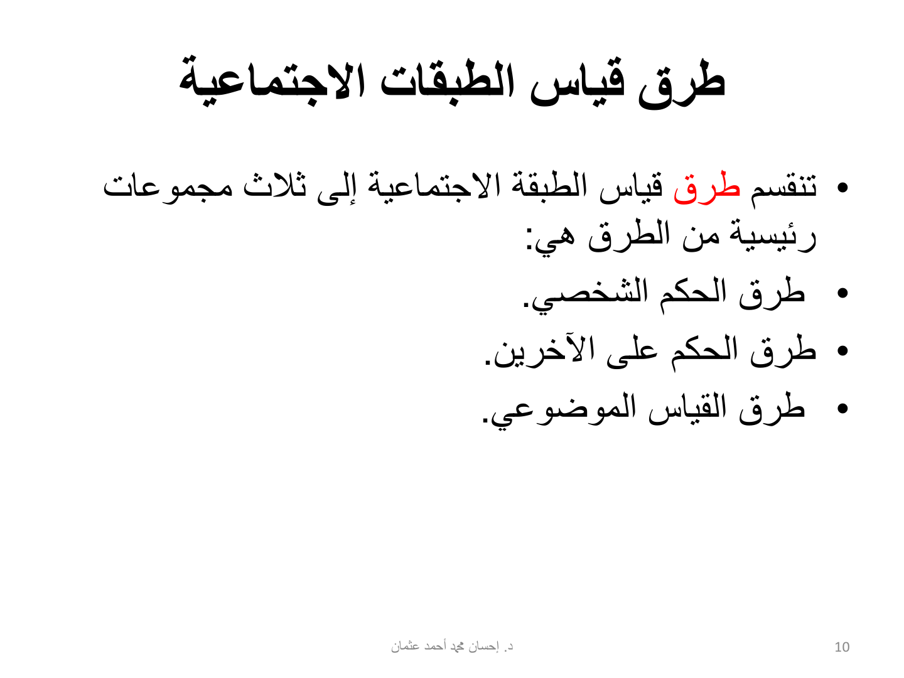
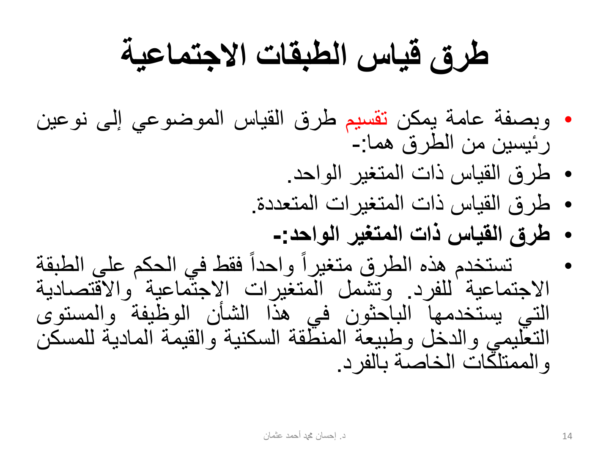
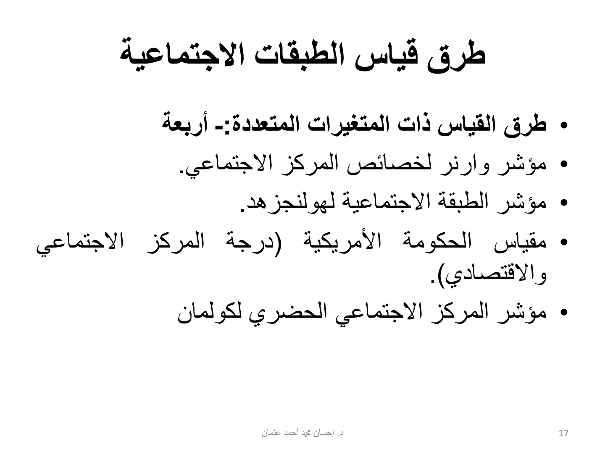
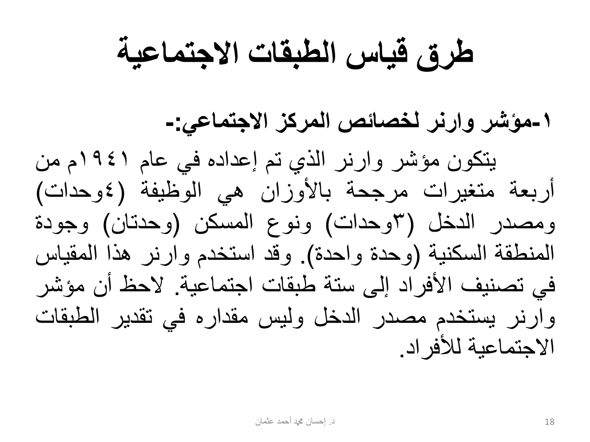
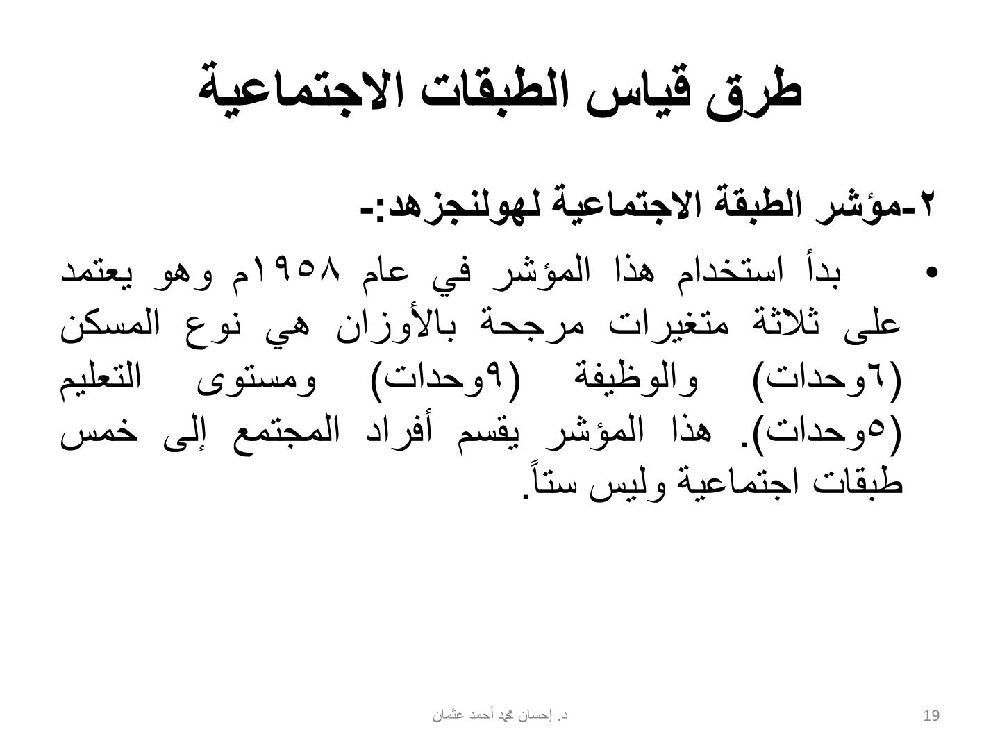
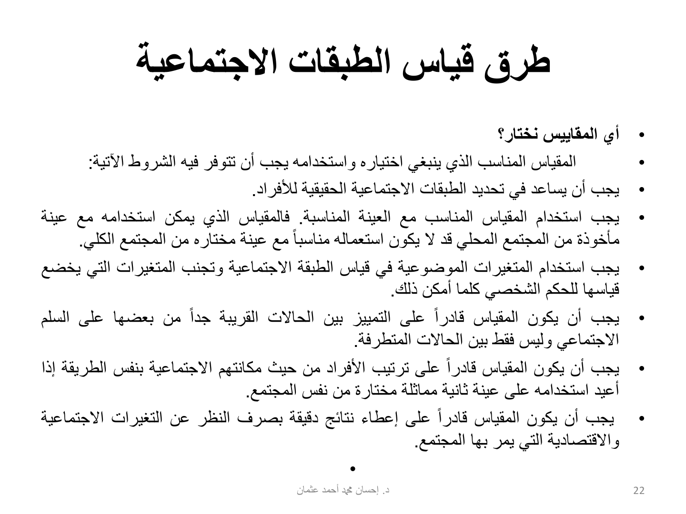

النقاط الأساسية من شرائح الفصل (28 شريحة). الملخص الكامل على الدرايف.
هذا الفصل عن الطبقات الاجتماعية: كيف المجتمع مقسوم فئات مرتبة زي الهرم، وكيف طبقتك تأثر في وش تشتري ووين تتسوق وكيف تقضي وقت فراغك. أهم شي فيه طرق قياس الطبقة (3 مجموعات، والموضوعي فيه 4 مؤشرات بأرقامها وسنواتها)، وبعدها 4 مراحل عشان تسوي إستراتيجية تسويقية لكل طبقة.






22 سؤال على هذا الفصل. حلّها في بنك الأسئلة — الجواب يطلع لك على طول، وتقدّمك ينحفظ.